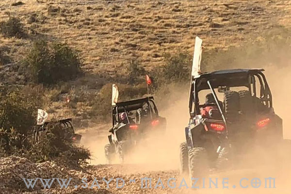
قام مركز الشرق الاوسط للصيد المستدام MESHC وجمعية حماية الطبيعة في لبنان SPNL بالتعاون مع Helmets on- Polaris و Friends Riders Lebanon و West Bekaa Country Club ومجموعة من الصيادين المستدامين برحلة توعية مبتكرة السبت والاحد 6/7 تشرين اول 2018، هدفها لفت النظر الى ضرورة حماية الطيور المهاجرة ( بجع رهو نسور حوم .. الخ) انطلق المشاركون بلباس الصيد وبدون بنادق بسيارات الدفع الرباعي على خط ممر الهجرة من اللقلوق مرورا بجرود تنورين والعاقورة نحو منطقة اليمونة وصولا الى خربة قنفار في البقاع الغربي حيث مقر المركز في الويست بقاع كونتري كلوب حملت السيارات اعلاما بيضاء تحتوي صورا لبعض الطيور المهاجرة وشعارات المنظمين والرعاة، وقد سلمت الاعلام الى الدراجين خلال احتفال قصير في اليوم التالي، انطلقوا بعده مكملين الرحلة بدراجاتهم على خط الهجرة نحو الجنوب للتأكيد على التعاون والتواصل مع كل محبي البيئة للحفاظ على مستقبل حضاري للبنان. من الحدث: - رعى الاستاذ طلال شريف رئيس بلدية اليمونة حفل الغداء للمشاركين، ثم قام بجولة معهم على بركة اليمونة التي تعتبر محطة آمنة للطيور المهاجرة، وتسلم مع رئيس مركز الشرق الاوسط للصيد المستدام شهادة شكر وتقدير على المساهمة في انجاح المشروع - اقيمت سهرة نار على انغام العود مع عشاء قروي للمشاركين في ويست بقاع كونتري كلوب . - اقيم احتفال صباحي قصير في اليوم التالي تحدث فيه الاستاذ جان ميني مدير عام ويست بقاع عن اهمية اختيار النادي كمنطقة اساسية للهجرة في اضيق نقطة بين السلسلتين الشرقية والغربية. - القى الشاعر حسين شعيب قصيدة رائعة عن الفرق بين الصياد والقواص في الاحتفال الصباحي نهار الاحد. - حضر الاحتفال رجل الاعمال والناشط البيئي في الضنية في شمال لبنان الاستاذ محمد فتفت وقام بمداخلة ضمن البرنامج فشكر مركز الشرق الاوسط وجمعية حماية الطبيعة في لبنان على الجهود الحقيقية الفعالة لحماة البيئة. - تحدث رئيس مركز الشرق الاوسط للصيد المستدام ومدير ملف الصيد المسؤول في جمعية حماية الطبيعة في لبنان ادونيس الخطيب عن نشاطات المركز والجمعية واهمية الشراكات في العمل لتوسيع دائرة التأثير، وقدم شهادات شكر وتقدير للرعاة ( مياه عالية – بلدية اليمونة – خان الصابون ) ولمجموعات الصيد المشاركة ( تريغر تيم – اساطير الصيد – جمعية بيت الصياد ). - عاد الصيادون الى مكان الانطلاق عبر زحلة صنين وصولا الى عيون السيمان . تصوير طوني بجاني /دونا قزي/روني خوري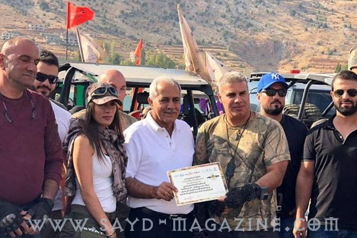
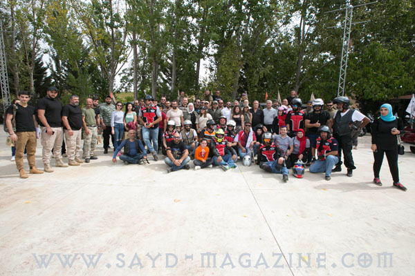
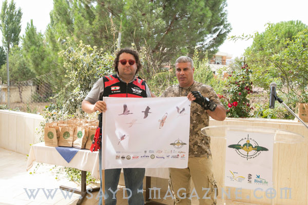
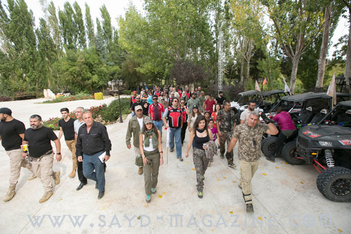
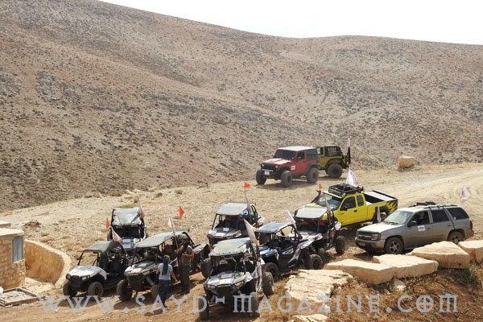
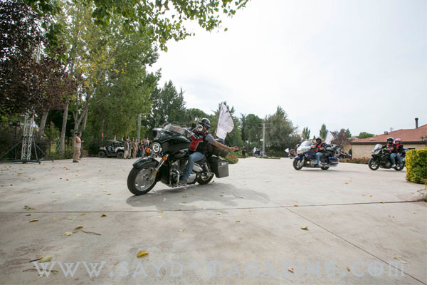
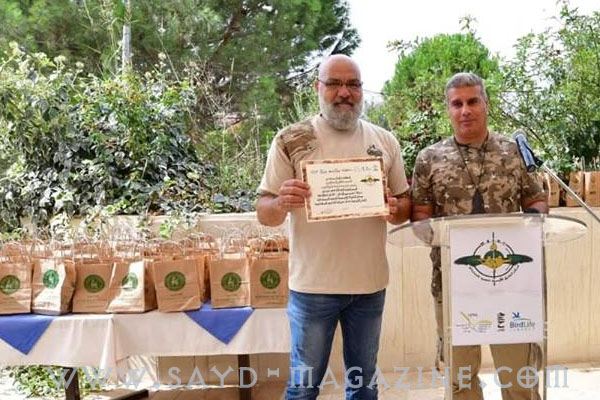
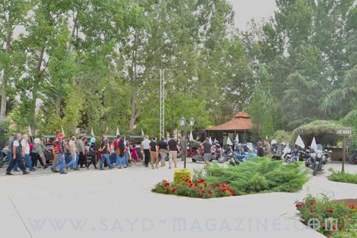
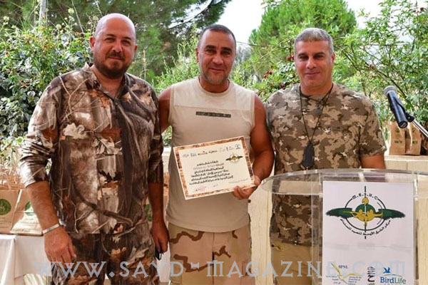
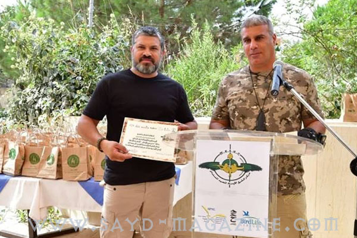
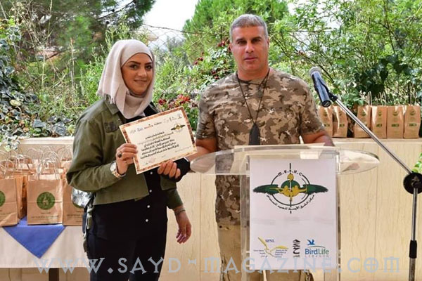
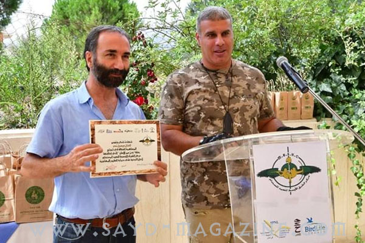
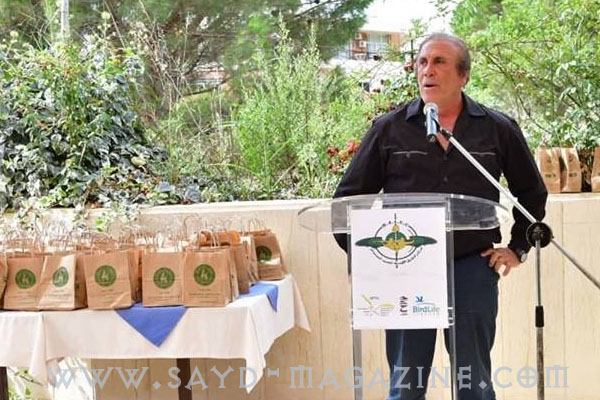
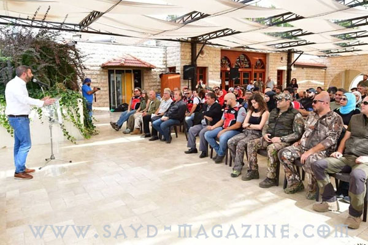
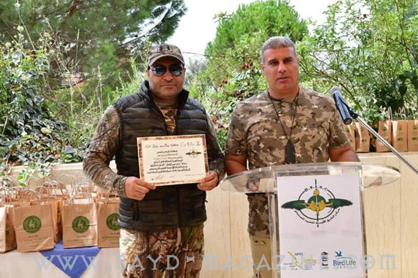
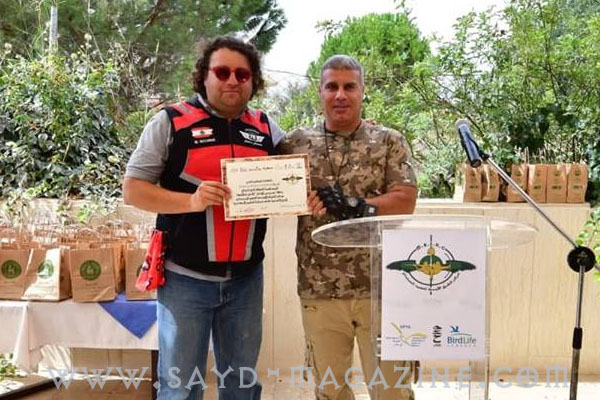
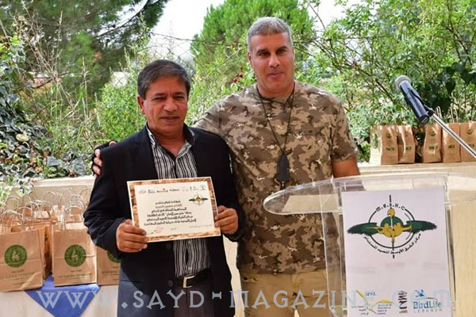
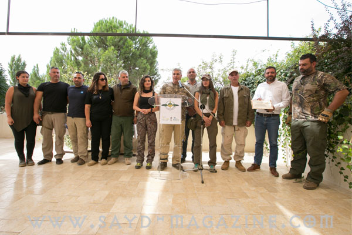
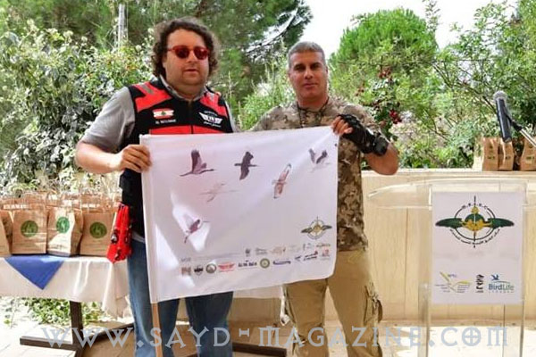
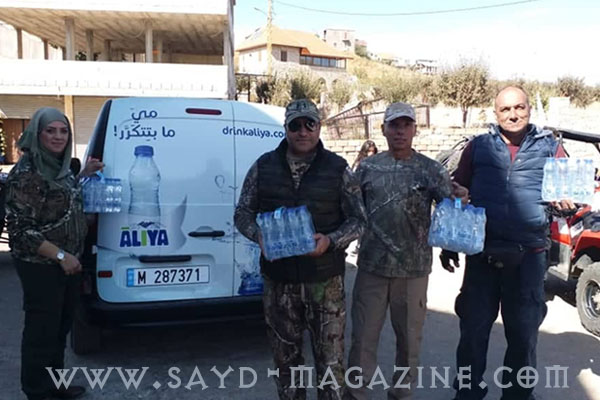
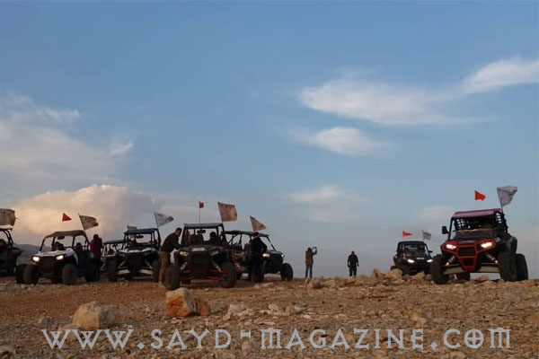
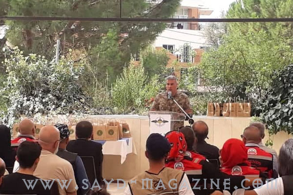
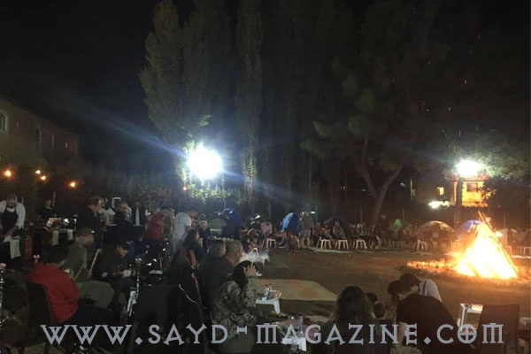
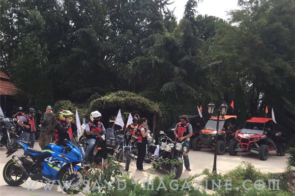
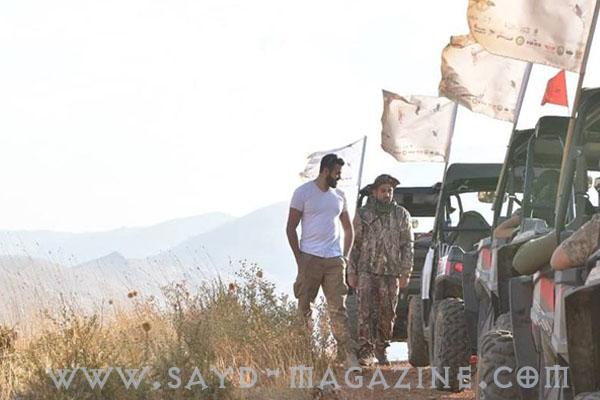